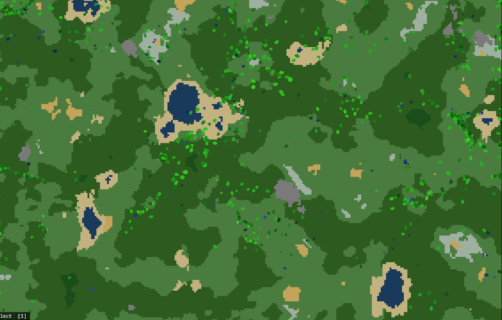

Start with simple rules.
See what emerges.
Morphogen is a personal ecosystem simulation built around inherited traits, resource constraints and environmental pressure.
ProjectPersonal simulation experiment
FrontendTypeScript · Vite · Canvas 2D
PurposeInspectable interaction, not prediction
ExploreBrowser demo ↗

Rules first.
Then observation.
Problem. Ecological interactions are easier to question when a person can change a condition and see the model respond.
Contribution. Morphogen combines procedural terrain, resource constraints and heritable traits in a browser-based experiment.
Verification. The browser demo can be launched, paused and restored to the archived capture; it is exploratory rather than a validated ecological predictor.